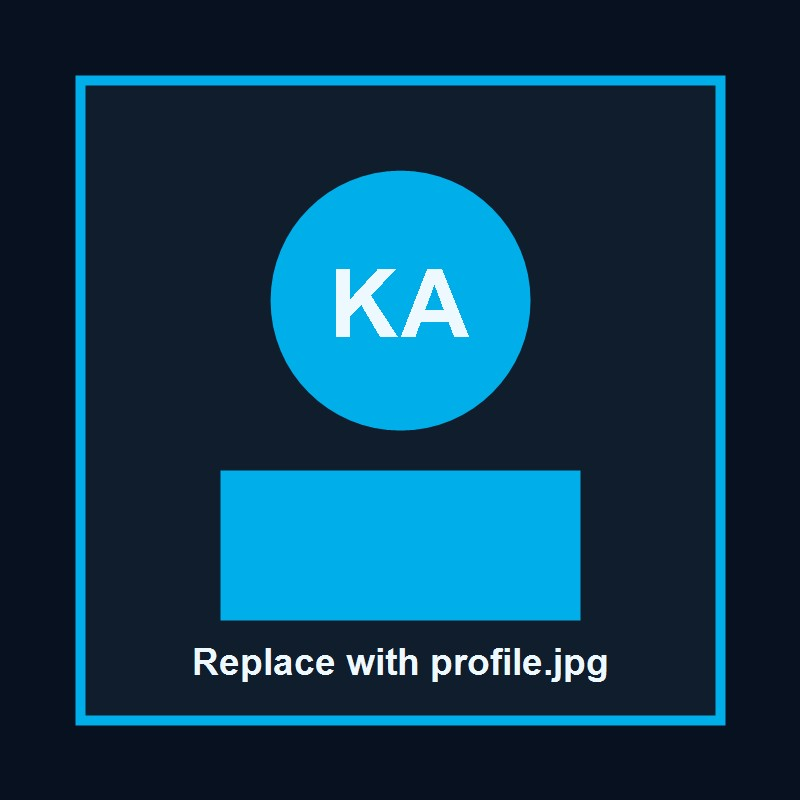

Profile Data
About Me
A curious Computer Science student who enjoys technology, science, software development, creative drawing, gaming, and understanding how complex systems work.

KAMARUL ADAM SHAH BIN KAMARUL AZLAN
I am 22 years old and currently studying Computer Science in Software Development at Universiti Sultan Zainal Abidin (UniSZA), Faculty of Informatics and Computing / Fakulti Informatik dan Komputeran (FIK). I am in class PP, which stands for Pembangunan Perisian, and I am currently in Third Year, Semester 6.
I enjoy analyzing data, solving problems, building websites, and exploring artificial intelligence. I am motivated to improve my technical skills and create useful digital solutions that can support real users.
Career Goals
My dream career is to become a Software Engineer, Data Engineer, or AI Engineer. I want to work on systems that combine good software design, useful data, and intelligent problem solving.
Why I Enjoy Programming
I enjoy programming because it allows me to turn ideas into real working systems. I like solving errors, improving user experience, designing interfaces, and building systems that can help people.
Hobbies
Outside academics, I enjoy drawing anime, cartoon-style art, realistic portraits, animals, and humans. I am also a gamer, which inspires my interest in interactive systems and game-based web projects.
Academic Timeline
My Learning Journey
Foundation in Computing
Built core understanding in programming logic, web basics, database concepts, and university learning habits.
Software Development Practice
Worked with web technologies, PHP, MySQL, project planning, and more structured development workflows.
Portfolio and Advanced Projects
Focused on RESTful systems, interactive projects, data tools, AI concepts, and GitHub portfolio documentation.